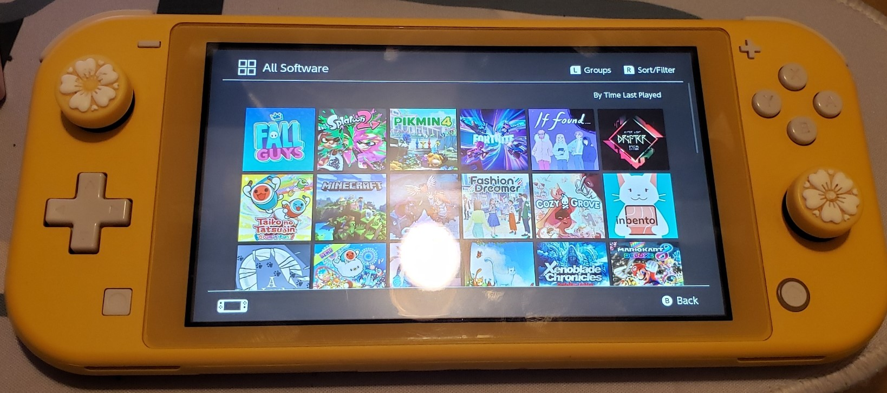

hardware
i don't have much stuff that i play in but i thought it would be cool to showcase what i have and the story behind them!
3DS
.jpg)
thank you to my dad for getting me this back in may 2011. the 3DS launched in february 2011 but i still consider this a day one 3DS. he bought it alongside nintendogs + cats, and that game was the ONLY 3DS game i ever had throughout my childhood with this little thing. and honestly, nintendogs + cats was enough to satisfy me for years and years. though to be fair, i mostly just played DS games on my 3DS.
i think thanks to my parents, i learned how to take better care of my 3DS (compared to my DS lite, rest in peace that thing.) to the point where i am very proud to announce that it does not even have a scratch on the bottom screen. it is in incredible conditions to this day.
.jpg)
on june 2024 i decided to hack it (and it was SO easy btw) and i finally some games i've been longing to play on the 3DS like style savvy trendsetters and styling star. i have a ton of other games i want to play and try out but you will see those eventually on my gaming log!
.JPG)
.JPG)
.JPG)
overall, i love the 3DS system. i dont give a fuck if its the nostalgia but i just love the little gimmicks that this console has. from the camera, to the game notes, to the now nonexistent miiverse, to flipnote: i feel like even if you didn't have anything to play here, you can always find something to do here. i also love the streetpass feature this console has and i wish there was something similar to that with the switch.
useful links: 3ds hacks, nintendo roms
switch lite
i often call this my indie machine because that is mostly what i use it for, to play indie games.
this is my first console that i bought with my hard earned retail money during april 2020. i remember i actually bought it and preordered animal crossing: new horizons once it arrived. and my god was i hooked on that game. til i got sick of it of course.
i also played some more... less indie games in here like fortnite, minecraft, fall guys, and splatoon 2. with fortnite being the reason as to why i had to open up my switch and replace the left joystick for a new one. do not play fortnite. specially on the switch. its not worth it.
i think the switch is very nice if you want something that isnt like $500 and be able to play it on the go. though i do have to say that i should have waited a tiny bit to be able to afford the normal switch. despite the switch lite being for comfortable to play in its handheld mode, i think i would have appreciated a bit more the switch controllers and also the fact that you can play your games on a big tv. and also the usb port. i have a $100 taiko drum that i have to use with a USB-C DONGLE so i can play it with my switch lite.
PS4
my goodness gracious. this beast came to me on christmas 2016 (thank you dad, we love you dad) after finding out that fallout 4 couldn't run on my shitty laptop. i actually have no clue how my dad did it (economically wise) but on the 26th we went to best buy (not sponsored) and he got me a PS4 alongside fallout 4.
ever since i saw this commercial for the PS4, i've always wanted one. there was also that time when P.T. came out and i was DYINGGGGG to play that demo but i never got to do that. L.
i've always had an immense love for this console since it's the only thing i'm able to use those beefy AAA games i play every 2 years or so. though i did play fallout 4 the most here. i believe reaching 260 hrs of gameplay.
around july 2023 i started having wifi and blutooth problems. i replaced the antenna and that didn't fix it. meaning the problem was the chip attached to the motherboard  my PS4 is technically unusable because the dualshock 4 connects via bluetooth ONLY for some god damn reason??? it's really dumb and i hate it so much. the console turns on and everything just fine. i ordered an actual wired controller so i'll see if i can manage to use it with that.
my PS4 is technically unusable because the dualshock 4 connects via bluetooth ONLY for some god damn reason??? it's really dumb and i hate it so much. the console turns on and everything just fine. i ordered an actual wired controller so i'll see if i can manage to use it with that.
wii u
i wanted you when no one else did. (will write more soon)
last updated on: 19.dec.24